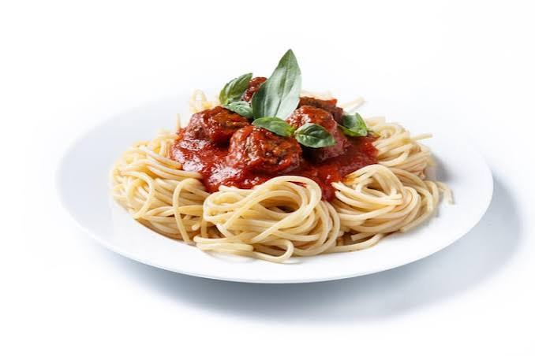

Classic Spaghetti

A quick and delicious pasta dish made with tender spaghetti topped with a savory tomato and ground beef sauce.
Ingredients
- 200g spaghetti
- 250g ground beef
- 1 small onion & 2 garlic cloves (chopped)
- 1 cup tomato sauce
- 1 tbsp olive oil, salt, pepper, and dried oregano
Steps
Boil Pasta:
Cook spaghetti in salted boiling water until tender, then drain.Sauté Aromatics:
Heat olive oil in a pan and cook onions and garlic until soft.Brown Meat:
Add ground beef and cook until browned.Simmer Sauce:
Add ground beef and cook until browned.Serve:
Pour the sauce over the cooked spaghetti and enjoy.
Click here on Home to go to Home page.